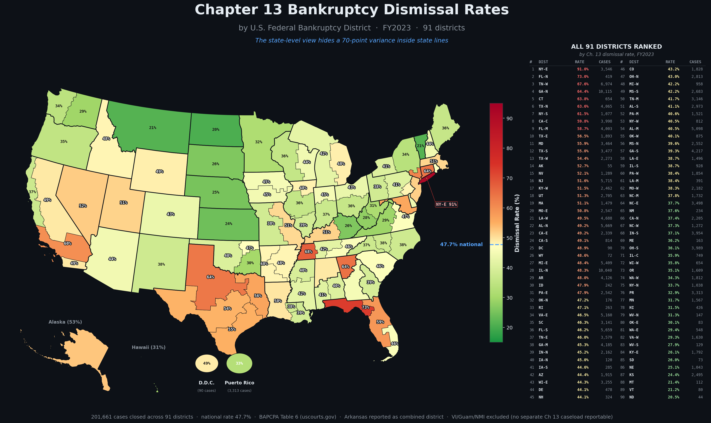

Choropleth map of Chapter 13 dismissal rates across the 90
federal bankruptcy districts. Range: ~25% in lowest-dismissal districts to
~85% in highest. The geography of bankruptcy outcomes is not uniform.

What "dismissal" means
A Chapter 13 case is "dismissed" when the case ends without the debtor
receiving a discharge. The most common dismissal grounds:
Plan never confirmed: the debtor and creditors never
reached a confirmable plan.
Plan failed mid-case: the debtor stopped making plan
payments and the trustee or court dismissed the case.
Voluntary dismissal: the debtor withdrew the case
under § 1307.
Conversion to Chapter 7: the case was not "dismissed"
strictly but converted to liquidation.
The geography
Highest dismissal rates: districts in the southeast
(Georgia, Alabama, North Carolina, South Carolina, Tennessee). Often
correlates with high Chapter 13 filing rates and aggressive 5-year plans.
Lowest dismissal rates: districts in the northeast and
upper midwest (Vermont, Massachusetts, Wisconsin). Lower Chapter 13 volume
overall; debtors typically file Chapter 7.
Why this matters
A high dismissal rate is not inherently good or bad — it depends on
why dismissals are happening. But for a borrower deciding whether to file
Chapter 13, the local district's dismissal rate is meaningful prior
information. A district with 80% dismissal of Chapter 13 cases is delivering
discharge to a small minority of filers; a district with 30% dismissal is
delivering it to most.